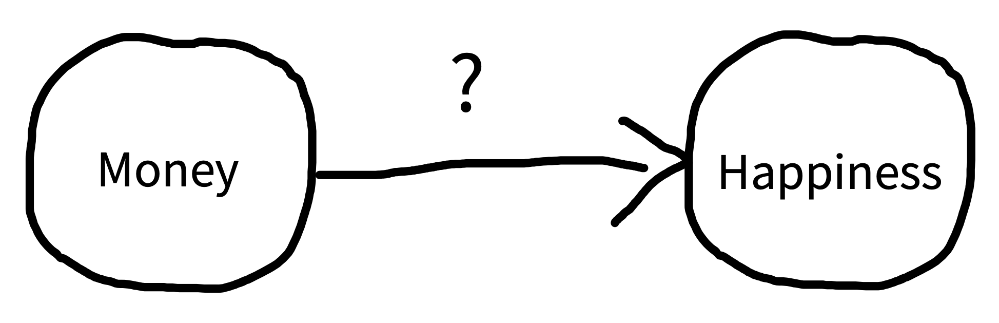
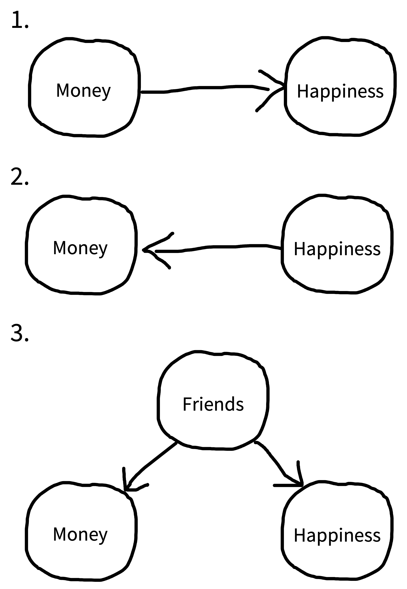
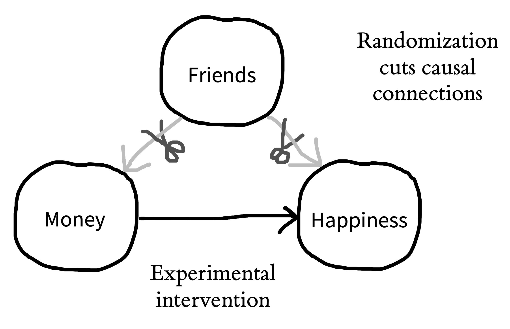
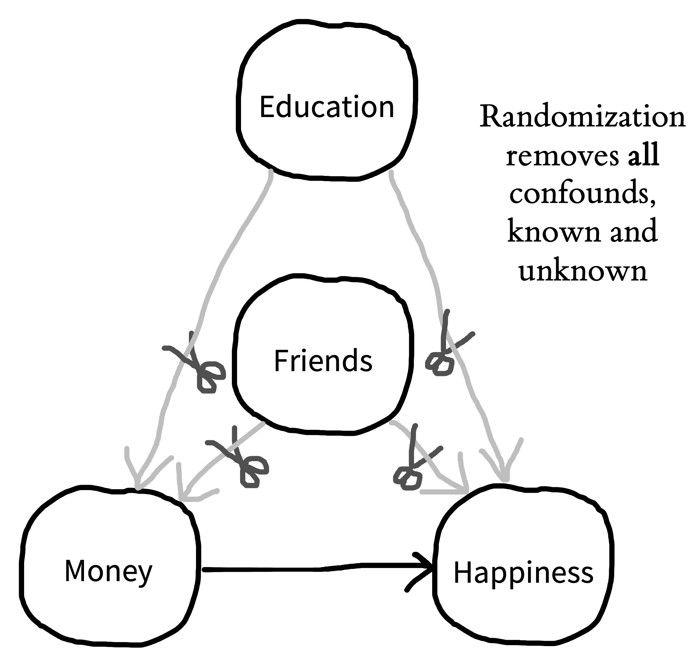
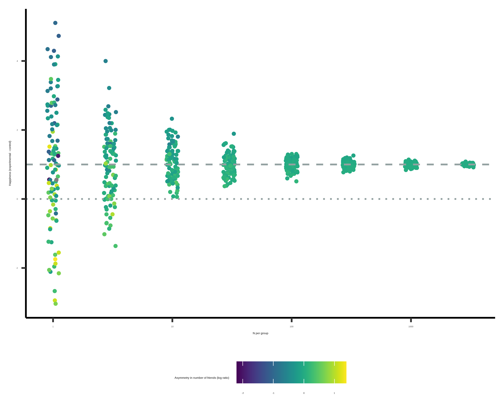
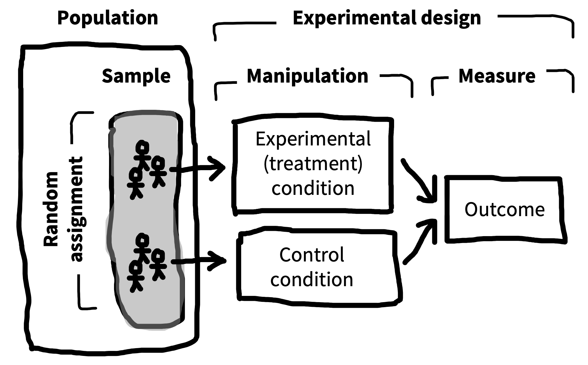

1 实验
- 定义什么是实验
- 用因果图对比观察性研究和实验研究
- 理解随机化在实验中的作用
- 思考实验的 generalizability（可推广性）会受到哪些限制
欢迎来到 Experimentology！这本书讨论的是如何开展心理学实验。贯穿全书，我们会围绕一个简单想法展开：
实验的目的，是估计因果效应的大小。1
1 你可能已经在想：“这不是我理解的实验！我以为实验是用来检验假设的。”先别急。我们希望后面能说服你：我们的定义更一般；而检验假设只是你可以用一次测量来做的一件事。
从这个核心想法出发，我们会讨论如何处理实验设计、测量、抽样等问题。你在这些环节中的选择，会决定估计有多精确，也会决定它是否容易受到偏差影响。不过在进入这些主题之前，我们先从一个更基础的问题开始：为什么要做实验？这个问题会和本书的两个核心主题 bias reduction（减少偏差） 与 generalizability（可推广性） 交织在一起。
1.1 观察性研究无法揭示因果性
如果你在读这本书，你大概有某些关于心理学的问题想弄明白。语言是如何习得的？我们为什么会体验到幸福和悲伤这样的情绪？为什么人类有时会合作，有时又会互相伤害？当心理学家研究这些古老问题时，他们常常会把它们转化成关于 因果性 的问题。2
2 定义因果性是哲学中最困难、也最古老的问题之一，我们不会试图在这里解决它。不过从心理学视角来看，我们很喜欢 Lewis 的 (1973) “counterfactual” 因果性分析。按照这个观点，我们可以通过设想一个场景来理解“金钱导致幸福”：如果人们没有得到更多金钱，他们就不会体验到幸福感的提升。
1.1.1 描述因果关系
考虑一个老问题：金钱会让人更幸福吗？这个问题的核心，其实是在问我们能对世界做出什么干预。我能不能通过获得更多金钱让自己更幸福？我能不能用金钱导致幸福？
我们要怎么检验“金钱影响幸福”这个假设效应？直觉上，很多人会想到做一个 观察性研究。我们可以调查人们赚多少钱，以及他们有多幸福。这个研究的结果会给每个参与者一组成对的测量值：[money, happiness]。
现在想象一下，你的观察性研究发现收入和幸福感有关，也就是说二者在统计上 相关：钱更多的人往往更幸福。那我们能得出结论说金钱导致幸福吗？不一定。存在相关，并不意味着存在因果关系！

我们可以把因果假设说得更精确一点。为了表示因果关系，我们会用一种工具，叫 有向无环图（directed acyclic graphs，DAGs）(Pearl 1998)。Figure 1.1 展示了金钱和幸福之间的一个 DAG。箭头表示我们关于两个变量之间潜在因果联系的想法：金钱和幸福。箭头的方向告诉我们，我们假设的因果关系是朝哪个方向发生的。
我们在观察性研究中看到的金钱与幸福之间的相关，与 图 1.1 中的因果模型是一致的；但是，它也同样与好几种替代性的因果模型一致。下面我们会用 DAGs 来说明这些模型。
1.1.2 方向性与 confounding 的问题

图 1.2 用 DAGs 展示了几种都能解释金钱和幸福之间观察到的相关的因果模型。DAG 1 表示我们的假设关系：金钱使人幸福。但 DAG 2 展示的是完全相反方向的效应！在这个 DAG 中，幸福使人赚到更多钱。
更让人困惑的是，金钱和幸福之间可能存在相关，但两个方向上都没有因果关系。相反，第三个变量，也就是通常所说的 confound，可能同时导致金钱和幸福增加。比如，也许拥有更多朋友会让人更幸福，也会让人赚更多钱（DAG 3）。在这种情况下，幸福和金钱会相关，尽管二者并不是彼此的原因。
一个 confound（或几个 confounds）可能完全解释两个变量之间的关系（如 DAG 3），但它也可能只是部分解释这种关系。比如，金钱确实可能增加幸福，但这个因果效应相当小，只解释了二者观察到的相关中的一小部分；剩下的部分则由“朋友”这个 confound（也许还有其他 confounds）解释。
在这种情况下，由于 confounds 的存在，我们说金钱与幸福之间观察到的相关，是金钱对幸福的因果效应的一个 有偏 估计。confounds 引入的偏差大小会因情境而异：它可能很小，也可能强到让我们在两个变量根本不存在因果关系时误以为存在因果关系。图 1.2 总结的这种局面，正是我们说“相关不蕴含因果”的原因。两个变量之间的相关可以与二者之间存在因果关系相容，但它也同样可以与其他关系相容。3
3 有时人们会问，因果是否蕴含相关（相反方向）。简短回答是：也不一定。两个变量之间存在因果关系，通常意味着它们在数据中会相关，但并非总是如此。比如，想象你测量一辆车的速度和油门踏板/加速器上的压力。一般来说，压力和速度会相关，这与二者之间的因果关系一致。但现在想象你只在有人开车上坡时测量这两个变量——这时速度可能保持不变，而压力可能在增加，反映的是驾驶者试图保持车速。因此，在这个数据集中两个变量不会相关，尽管二者之间的因果关系仍然存在。
4 事实上，DAGs 是社会科学家用来推理因果关系的关键工具之一。DAGs 会指导统计模型的建立，用来从观察性数据中估计特定的因果效应。我们不会在这里讨论这些方法，但如果你感兴趣，可以看看本章末尾的推荐阅读。
你仍然可以从观察性研究中了解因果关系，但需要采用更复杂的方法。你不能只是测量相关，然后跳到因果结论。社会科学中的“因果革命”得益于一系列统计方法的发展，这些方法使我们能够从观察性数据集中推理因果关系。4 这些方法很有意思，但它们只适用于某些特定情形。相比之下，实验方法总是能够减少由 confounding 造成的偏差（当然，有些实验出于伦理或实践原因是不能做的）。
1.2 实验帮助我们回答因果问题
想象一下，你（a）创造了一个我们世界的精确复制品，（b）给复制世界里的每个人 1,000 美元，然后（c）几年后发现，复制世界里的每个人都比原始世界中与之匹配的自己更幸福。这个实验会为“金钱让人更幸福”提供强有力的证据。我们来想想为什么。
考虑某一个具体的人：如果他们在复制世界中比在原始世界中更幸福，什么能解释这种差异？既然我们精确复制了整个世界，却只做了一个改变，也就是金钱，那么这个改变就是唯一能够解释幸福差异的因素。我们可以说，除了金钱以外，我们保持了所有变量不变；而金钱是我们在实验中 操纵 的变量，我们观察它对某个 测量 的影响，也就是幸福。这一想法——除了特定的实验操纵之外保持所有变量不变——就是实验方法背后的基本逻辑 (as articulated by Mill 1843)。5
5 另一种理解为什么我们可以在这里推断因果性 的方式，是回到前面脚注中提到的 counterfactual 逻辑。如果因果性的定义是 counterfactual 的（“如果原因不同，会发生什么？”），那么这个实验就满足了这个定义。在这个不可能的实验中，我们可以直接看到 counterfactual：如果这个人多了 1,000 美元，他们会多幸福！
回到我们关于金钱和幸福的观察性研究。其中一个重大的因果推断问题，是存在“第三变量”confounds，例如拥有更多朋友。更多朋友可能让你更有钱，也可能让你更幸福。实验的想法是保持其他所有东西不变，包括人们拥有多少朋友，这样我们就能测量金钱对幸福的影响。通过保持朋友数量不变，我们就切断了朋友与金钱、朋友与幸福之间的因果联系。图 1.3 以图形方式表达了这一点：我们把“朋友”这个 confound “剪掉”了。

1.2.1 我们无法让人保持不变
你可能会想，理论上听起来很好，但我们不可能真的创造出一个所有东西都保持不变的复制世界，那么现实世界里的实验要怎么做？如果我们讨论的是烤蛋糕的实验，那很容易看出怎样才能保持所有材料不变，只改变一个东西，比如烘焙温度。这样我们就能对烘焙温度的影响做一个实验检验。但当我们讨论的是人时，怎么才能“保持某个东西不变”？人不是蛋糕。没有两个人是一样的；正如每个有多个孩子的父母都知道的，即使你试图“保持材料不变”，结果也不会一样！
如果我们拿两个人来比较，给其中一个人钱，我们比较的是两个不同的人，而不是在所有东西保持不变时同一个人的两个实例。我们也不能为了让第一个人与第二个人匹配，就让第一个人拥有更多或更少朋友——这不是保持任何东西不变；相反，这是另一个（巨大、困难，而且可能不合伦理的）干预，它本身也可能对幸福产生很多影响。
你可能会想：为什么不直接问人们有多少朋友，然后利用这些信息把他们分成相等的组？你当然可以这么做，但这种策略只能让你控制那些你知道的 confounds。比如，你也许能根据朋友数量把人均分到两组，但没有根据受教育程度来均分。如果受教育程度也同时影响金钱和幸福，你仍然有一个 confound。你接下来也许会尝试同时按朋友数量和受教育程度来分组。但也许还有另一个你没注意到的 confound：睡眠质量！类似地，只选择拥有相同朋友数量的人也行不通——这只保持了朋友这个变量不变，而没有保持两个人之间其他所有差异不变。那么我们该怎么办？6
6 许多见过社会科学中使用回归模型的研究者会以为，“控制很多东西”是改进因果推断的好办法。并不是！事实上，如果没有明确的因果理由，不恰当地控制某个变量，反而可能让你的效应估计更有偏 (Wysocki, Lawson, 和 Rhemtulla 2022)。
1.2.2 随机化来解决问题

答案是 随机化。如果你把一大屋子人随机分成两组，平均而言，这两组会有相似的朋友数量。同样，如果你随机决定实验中谁能收到钱，你会发现有钱组和无钱组平均而言会有相似的朋友数量。换句话说，通过随机化，朋友的 confounding 作用被控制住了。但最重要的是，被控制住的并不只是朋友的作用；受教育程度、睡眠质量，以及所有其他 confounds 也都被控制住了。如果你把一大群人随机分成若干组，那么平均而言，这些组会在所有方面都相等（图 1.4）。
所以，我们的简单实验设计是这样的：把一些人随机分派到有钱组，把另一些人随机分派到无钱 control group（我们有时把这些组称为 conditions）。然后我们测量两组人的幸福感。随机化的基本逻辑是：如果金钱导致幸福，那么我们应该在有钱组中看到更高的幸福感——平均而言。7
7 你可能已经想抗议了：这个实验可以做得更好。也许我们可以在随机化前后都测量幸福，以提高精确度。也许我们需要给 control condition 的参与者少量金钱，以确保两个 conditions 的参与者都和实验者互动过，从而让两个 conditions 尽可能相似。我们同意！这些都是实验设计的重要部分，我们会在后续章节中谈到。
随机化是一个强大的工具，但它有一个 caveat：它并不是每次都奏效。平均而言，随机化会确保你的有钱组和无钱组在朋友数量、受教育程度、睡眠质量等 confounds 上是相等的。但就像你抛硬币时有时十次里会出现九次正面一样，有时你使用了随机化，仍然会碰巧让某个 condition 中受教育程度较高的人比另一个 condition 更多。随机化保证的是，平均而言，所有 confounds 都被控制。因此，来自这些 confounds 的系统性偏差不会进入你的估计。但随机变异仍然会带来一些噪声。
总之，随机化是一种极其简单而有效的方法，用来在操纵变量之外保持一切不变。通过这样做，随机化让实验心理学家能够对因果关系做出无偏估计。重要的是，无论你是否能控制实验的每一个方面，随机化都能发挥作用：在烤蛋糕时如此，在用人作为研究对象时也是如此。8
8 这里有一个重要 caveat：你并不总是必须随机化人。你可以使用一种叫做 within-participants design 的实验设计，让同一批人处于多个 conditions 中。这种设计有另一组未知 confounds，这次集中在时间上。为了绕开这些 confounds，你必须随机化操纵呈现的顺序。对于某些类型的操纵，这种随机化非常有效；但对另一些操纵则不太有效。我们会在 章 9 中更多讨论这些设计。
不幸的随机化？
正如我们一直在讨论的，random assignment 通过确保各组在所有特征上——平均而言——相等，来去除 confounding。不过，对于任何一次具体的 random assignment 来说，样本越大，这种等价越可能成立。任何单个实验都可能受到 unhappy randomization 的影响，也就是某个 confound 纯粹由于偶然，在组间没有平衡。
unhappy randomization 在小实验中比在大实验中常见得多。为了理解原因，我们使用一种叫 simulation 的技术。在 simulations 中，我们根据一组假设随机生成数据：我们虚构一组参与者，并生成他们的特征和 condition assignments。通过改变所使用的假设，我们可以考察特定选择会如何改变数据结构。
为了考察 unhappy randomization，我们创建了许多模拟版的金钱-幸福实验。在这些实验中，experimental group 收到钱，control group 不收到钱，然后我们测量两组的幸福感。我们假设每个参与者都有一定数量的朋友，而且朋友越多，他们越幸福。因此，当我们把他们随机分派到 experimental 和 control groups 时，就会面临 unhappy randomization 的风险：有时一组会比另一组拥有多得多的朋友。

图 1.5 展示了这个 simulation 的结果。每个点都是一个实验，表示对幸福效应的一次估计（给 experimental group 的金钱带来了多少幸福）。对于非常小的实验（例如每组只有一个或三个参与者），点会离表示真实效应的虚线非常远——这意味着这些估计极其 noisy！原因就是 unhappy randomization。 上方和下方的点对应的是某一组拥有的朋友远多于另一组的情况。
关于这个 simulation，有三点值得注意。第一，随着 sample size 变大，总体噪声会下降：更大的实验会产生更接近真实效应的估计。第二，随着样本变大，unhappy randomization 也会显著减少。虽然在大型实验中，个体之间的差异仍然同样大，但在最大的组里，每个 condition 中的组平均朋友数量几乎完全相同。
最后，尽管小实验各自都非常 noisy，但所有小实验的平均效应仍然非常接近真实效应。最后这一点说明了，当我们说随机化实验去除了 confounds 时，我们是什么意思。即使在我们的 simulation 中，朋友数量仍然是决定幸福的重要因素，跨实验的平均效应仍然是正确的，而且每一个单独估计都是无偏的。
1.3 Generalizability（可推广性）
当我们提出关于心理学的问题时，重要的是要思考我们到底想研究谁。我们想知道金钱是否会增加所有人的幸福吗？是生活在物质主义社会中的人吗？还是基本需求没有得到满足的人？我们把试图研究的那群人称为 目标总体，把实际参加实验的人称为 样本。而 抽样 这个过程，就是我们招募人们进入实验所做的事情。
有时，研究者从一个总体中抽样，却对另一个（通常更宽泛的）总体提出主张。比如，他们可能用一个特定的美国大学生样本来运行实验，却把结论 generalize 到所有人（他们意图中的目标总体）。 样本与总体的不匹配并不总是问题，但因果关系常常会因总体不同而不同。
遗憾的是，心理学家普遍假设，基于美国和欧洲样本的研究可以 generalize 到世界其他地区，但事实往往并非如此。为了凸显这个问题，Henrich, Heine, 和 Norenzayan (2010) 创造了 WEIRD 这个缩写。 这个醒目的名称描述了从一个相当不寻常的样本推广到全人类时的奇怪之处：这个样本是 Western、Educated、Industrialized、Rich、Democratic 的。Henrich 及其同事认为，诸如视觉知觉、空间认知和社会推理这些看似“基本”的心理功能，在不同总体中都广泛存在差异。因此，任何基于 WEIRD subpopulation 估计出的效应所做的推广，都可能是不成立的。
在 21 世纪初，研究者发现，感恩干预——例如写一篇简短文章，描述别人为你做过的一件好事——会在西方国家进行的研究中增加幸福。基于这些发现，一些心理学家认为，感恩干预可以增加所有人的幸福。但他们似乎错了。几年后，Layous 等 (2013) 在两个地点运行了一个感恩实验：美国和韩国。令人惊讶的是，感恩干预降低了韩国样本中的幸福感。研究者把这种负面效应归因于韩国人在反思感恩时更明显体验到的亏欠感。在这个例子中，我们会说，用美国样本得到的发现，可能无法 generalize 到韩国人。
generalizability 的问题延伸到实验的所有方面，而不只是样本。例如，即使我们假想的现金干预实验确实提高了幸福感，我们也未必有理由把结论 generalize 到提供金钱的不同方式。也许是我们给出的金额或提供金钱的方式中某些特殊因素导致了观察到的效应。如果没有测试多种不同的干预类型，我们就不能提出宽泛的主张。正如我们会在 章 7 和 章 9 中看到的，这个问题会影响我们的统计分析和实验设计 (Yarkoni 2020)。
generalizability 的问题无处不在，但第一步只是承认它，并对它进行推理。也许所有论文都应该有一个 Constraints on Generality statement，让研究者讨论他们是否预期自己的发现能够跨不同样本、实验刺激、程序，以及历史和时间特征进行推广 (Simons, Shoda, 和 Lindsay 2017)。这种声明至少会提醒研究者保持谦逊：实验是理解世界如何运作的强大工具，但任何单个实验能教给我们的东西都有边界。
1.4 随机化实验的结构

现在是回过头来整理实验结构的好时机，因为这一结构会贯穿全书。图 1.6 展示了一个简单的两组实验，类似我们设想的金钱-幸福干预。一个样本取自更大的总体，样本中的参与者被随机分派到两个 conditions（操纵）之一：要么是提供金钱的 experimental condition， 要么是不提供金钱的 control condition。 然后，我们为每个参与者记录一个 outcome measure，也就是幸福。
在后续章节中，我们会更详细地讨论所有这些组成部分。我们会在 章 8 中讨论测量，因为好的测量是好实验的基础。然后在 章 9 中，我们会讨论可能的不同实验设计类型，以及它们各自的优缺点。最后，我们会在 章 10 中讨论抽样过程。
一个因果推断非常不清楚的实验
Stanford Prison Experiment 是心理学史上最著名的研究之一。参与者被随机分派，在 Stanford 心理学系大楼内部的监狱生活模拟中扮演“guards”和“prisoners”的角色 (Zimbardo 1972)。这项模拟原本设计为运行两周，但由于扮演 guards 的参与者表现出残忍行为，显然对模拟囚犯做出了各种去人性化行为，实验不得不在六天后终止。这个结果被广泛写入心理学导论教材，通常被解释为情境因素力量的证据：在合适的情境下，即使是 Stanford 的本科生，也能很快被说服去表现出世界上最糟糕监狱中那些不人道行为 (Griggs 2014)。
自这项研究最初发表以来，陆续出现的各种信息使其情境操纵的因果解释变得远不那么清楚 (Le Texier 2019)。guards 被告知了实验目标，并收到如何实现这些目标的指示。实验者本人还提出了一些严厉惩罚，后来这些惩罚的使用又被当作去人性化行为出现的证据。此外，在整个研究过程中，guards 和 prisoners 都受到了实验者的大量指导。一些参与者报告说，他们在研究中的反应被夸大或编造了 (Blum 2018)。所有这些问题都大大削弱了这样一种想法：参与者角色的分配（表面上的实验操纵）是观察到的行为的唯一原因。
这项研究的执行也不符合伦理。除了这样一项研究——连同它给参与者带来的所有风险——是否根本可能合乎伦理这一问题之外，研究中的许多特征也明显违反了我们将在 章 4 中学习的准则。参与者被阻止自愿退出研究。guards 被欺骗，以为自己是研究助理，而不是研究参与者。更糟的是，这项研究的报道也不准确：报道强调行为是自然出现的，强调模拟的沉浸性，以及实验记录的详尽程度。事实上，参与者受到了大量指示，模拟过程反复被研究环境中的日常细节打断，而实验中相对很少的一部分被视频记录并分析。
Prison Experiment 是心理学史上一段迷人但问题重重的插曲，但它几乎没有提供关于人类心智的因果证据。
1.5 本章小结：实验
在本章中，我们把实验定义为操纵和测量的组合。与随机化结合时，即使我们研究的是人（他们很难被保持不变），实验也能让我们做出强有力的因果推断。尽管如此，实验的力量也有边界：样本、实验刺激和程序总是存在限制，这些限制会影响我们能够在多大范围内 generalize。
想象你做了一项调查，发现花更多时间玩暴力电子游戏的人往往更有攻击性（也就是说，暴力电子游戏和攻击性之间存在正相关）。仿照 图 1.2，列出这两个变量可能相关的三种原因。
假设你想运行一个实验，检验玩暴力电子游戏是否会导致攻击性增加。你的操纵是什么？你的测量是什么？你会如何处理年龄等变量可能造成的 confounding？
考虑一个检验人们食物偏好的实验。实验者随机分派 30 名美国学龄前儿童，让他们吃芦笋或炸鸡柳，然后询问他们有多喜欢这顿饭。总体上，儿童更喜欢肉；实验者写了一篇论文，声称人类更偏好肉而不是蔬菜。列出这项研究在 generalizability 上的一些限制。考虑到这些限制，这项研究（或某种修改版）到底还值得做吗？
考虑 Milgram study，另一项经典心理学研究（也是我们在 章 4 中的 case study）。这项研究符合我们对实验的定义吗？
从社会科学视角出发的因果推断基础介绍：Huntington-Klein, Nick. (2021). The Effect: An Introduction to Research Design and Causality. Chapman & Hall/CRC. Available free online at https://theeffectbook.net.
稍微进阶一些的处理，主要聚焦于 econometrics：Cunningham, Scott. (2021). Causal Inference: The Mixtape. Yale University Press. Available free online at https://mixtape.scunning.com.